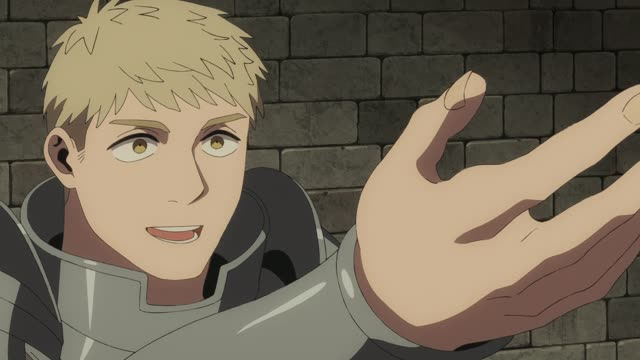
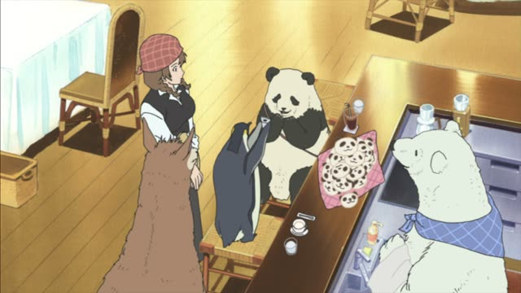
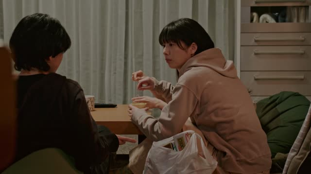
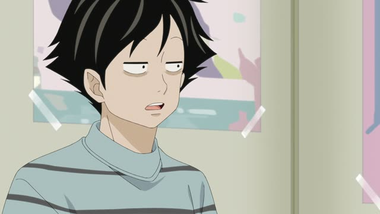

～てくれませんか・～てもらえませんか
| Polite | ～てくれませんか・～てもらえませんか |
|---|---|
| Casual | ～てくれない？・～てもらえる？ |
Same meaning: "could you do it for me?". Only the politeness changes.
Good Morning Call · Episode 12
明日、私とデートしてくれませんか？
"Would you go on a date with me tomorrow?"
～てくれませんか and ～てもらえませんか both mean "could you do it for me?". Asking in the negative ("won't you?") makes it softer than ～てください.
On this card, Yukari asks Issei out, straight to his face. てくれませんか: will you do this for me? It's polite.
くれる looks at it from the giver ("will you give me this?"), もらう from you ("can I get this from you?"). Both are fine.

Dungeon Meshi · Episode 16
力を貸してくれないか？
"Will you lend us a hand?"
On this card, Laios runs into Shuro and asks for help. くれないか: a casual, a bit manly "won't you?".
Quick Examples
Asking a stranger on the street.
すみません、写真を撮ってもらえませんか？
"Excuse me, could you take a photo?"
PoliteYour roommate is near the window.
ちょっと窓閉めてくれない？
"Could you close the window?"
CasualAsking your teacher.
この漢字の読み方を教えてくれませんか？
"Could you tell me how to read this kanji?"
PoliteYour friend is going to the shop.
ついでに牛乳買ってもらえる？
"Could you grab some milk while you're there?"
CasualWith and without
手伝ってください。
"Please help." A request.
手伝ってくれませんか？
"Could you help me?" Softer, asking.
Examples from Media
Quartet · Episode 2
一緒にやってもらえませんか？
"Would you play it with me?"
Kekkon Dekinai Otoko · Episode 7
せめて、あなたが聞いてくれませんか？
"Could you at least ask her?"
Kekkon Dekinai Otoko · Episode 11
気まずいから、何か話してもらえません？
"It's awkward, so could you say something?"

Shirokuma Cafe · Episode 12
帰りに届けてくれない？
"Could you drop it off on your way home?"
1 Litre of Tears · Episode 6
神戸医大の岡崎教授を紹介してくれないか？
"Could you introduce me to Professor Okazaki?"

Brush Up Life · Episode 5
この袋のお菓子を、そろそろ紹介してもらえる？
"Could you tell us about the snacks in this bag now?"
Midnight Diner: Tokyo Stories · Season 2, Episode 8
あのさ、ちょっと金貸してくんない？
"Hey, could you lend me some money?"
くんない = くれない, slurred.

Kotaro Lives Alone · Episode 3
まあいいか。じゃあ、原稿見せてくれる？
"Well, fine. Show me the draft, then?"